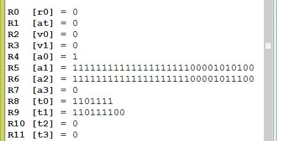

| Original | Shift Left Two |
|---|---|
| 0110 1111 | 1011 1100 |
| 0x6F | 0xBC |
If the original 8-bit pattern represented an integer, then shifting left by two positions is probably a mistake because a significant bit has been lost.
## shiftTwo.asm
##
## Program to logical shift left a pattern
.text
.globl main
main:
ori $8, $0, 0x6F # put bit pattern into register $8
sll $9, $8, 2 # shift left logical by two
## End of file
This program does the shift you just performed in the question. It does it with 32-bit patterns, but for the right-most eight bits the result is the same. Running the program does the following. Since this time the shift was done with 32 bits, the high order one-bit was not lost.

The register display in SPIM has been set to "binary" in the above.
High-order zero bits are not shown.
This program set the bit patterns only in registers
$8 and $9.
The other registers contain bit patterns not set by this program.
If a processor is running,
then all registers contain bit patterns whether or not your program is using them.
Do you think it would be OK to shift the contents of register $8 and put the
result back in register $8 :
ori $8, $0, 0x6F # put bit pattern into register $8
sll $8, $8, 2 # shift left logical by two